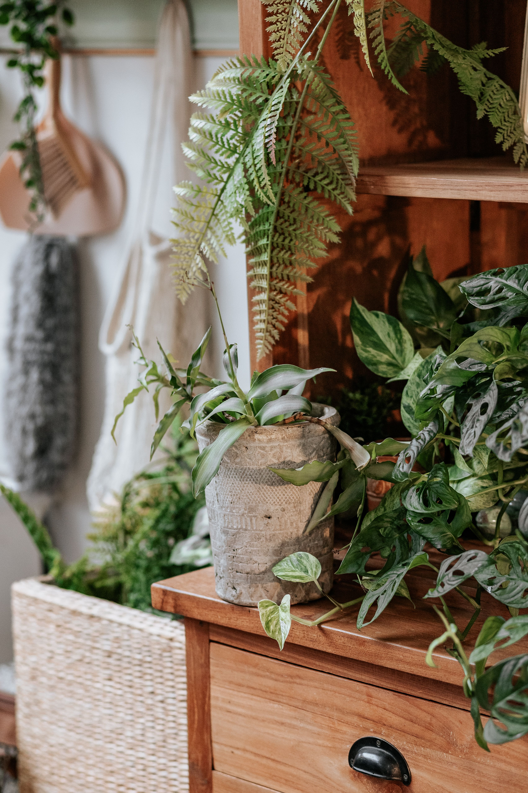

In This Article
- Introduction
- Clean Wood Correctly Without Damaging It
- Control Humidity and Spills
- Protect Furniture From Sunlight and Heat
- Maintain Furniture According to Its Finish
- Create a Practical Long-Term Care Routine
- Common Mistakes to Avoid
- Special Care According to How the Furniture Is Used
- Frequently Asked Questions
- Use Protection in High-Traffic Areas
- Use Protection in High-Traffic Areas
- Use Protection in High-Traffic Areas
- Use Protection in High-Traffic Areas
- Use Protection in High-Traffic Areas
- Conclusion
Introduction
Wooden furniture can remain attractive for many years when cleaning, moisture control, heat protection, and periodic maintenance are adapted to the finish and the way each piece is used. The most important rule is to identify the surface before applying any product. A varnished table, an oiled cabinet, a waxed chest, and a lacquered shelf do not necessarily require the same treatment.
Preventive care is usually safer and easier than trying to repair heavy damage later. Small habits such as removing spills promptly, protecting surfaces from hot objects, keeping furniture away from persistent dampness, and checking joints periodically can extend the life of a piece without turning maintenance into a complicated routine.
Clean Wood Correctly Without Damaging It
Daily cleaning should be gentle. Dust can look harmless, but mixed with moisture or grease it can become a film that is harder to remove. For many sealed surfaces, a clean, soft, slightly damp cloth is enough, followed by drying. Before using any cleaner, identify whether the furniture is varnished, waxed, oiled, lacquered, painted, or finished in another way.
Avoid soaking the wood. Excess water can enter joints, edges, cracks, or areas where the finish is worn. Unless the manufacturer says otherwise, it is usually safer to apply a cleaning product to the cloth rather than pouring or spraying it directly onto the furniture.
For localized dirt, work gradually. Abrasive pads, harsh scrubbing, and aggressive household chemicals can dull or damage finishes. Start with the least aggressive method and test any unfamiliar product in a hidden area.
Tables and other frequently used surfaces benefit from having crumbs, grease, and spills removed soon after use. Pay attention to corners, handles, drawer pulls, and joints where dirt tends to collect. If a piece is antique, valuable, or has an unknown finish, professional restoration advice may be safer than experimenting.
Control Humidity and Spills
Wood responds to changes in environmental humidity. It can expand, contract, warp, or develop movement at joints. For that reason, indoor wooden furniture should not remain against damp walls, near leaks, or in areas exposed to constant steam.
Kitchens and bathrooms can require extra attention because humidity changes quickly. Good ventilation and prompt drying of splashes are important. If the piece is not designed for a humid environment, moving it to a more stable location may be better than repeatedly trying to treat the surface.
When water, coffee, or another liquid is spilled, blot it promptly with an absorbent cloth instead of spreading it over a larger area. Coasters, placemats, and trivets reduce rings, heat marks, and discoloration. Plant pots also need protective saucers or trays so moisture does not remain trapped against wood for hours.
Very dry conditions can also be a problem for some solid-wood furniture. The goal is not a perfect humidity number but avoiding extreme and sudden changes. Keeping pieces away from radiators, heaters, and hot air outlets helps maintain more stable conditions.
Protect Furniture From Sunlight and Heat
Direct sunlight can gradually alter the color of many woods and finishes. This change may be part of natural aging, but uneven exposure can create obvious differences between covered and uncovered areas. Curtains, blinds, or a slight change in furniture position can reduce intense exposure during the brightest hours.
Heat sources deserve the same attention. Avoid placing indoor furniture too close to radiators, fireplaces, stoves, or strong hot-air outlets. Heat combined with low humidity can increase wood movement and may also affect certain finishes.
Use protection under hot dishes, pans, or appliances placed on wooden tables or counters. Heat damage can appear quickly and may be difficult to correct without refinishing.
If furniture sits near a window, review its exposure as the seasons change. The winter sun may enter at a different angle than summer sun. Rotating decorative objects and not keeping exactly the same section covered for years can help aging appear more even.
Maintain Furniture According to Its Finish
Deeper maintenance depends on the finish. Oiled furniture may need periodic reapplication with a compatible product. Waxed surfaces require appropriate waxes and methods. A varnished surface in good condition may need little more than careful routine cleaning.
Do not apply oil, wax, polish, or restorative products automatically without knowing what finish is present. Mixing incompatible products can leave residue, uneven shine, discoloration, or a surface that is harder to repair later.
Keep product instructions. When it is time to clean, maintain, or renew a finish, the manufacturer's information is more reliable than generic advice. If a product recommendation conflicts with general guidance, follow the specific instructions for that furniture or finish.

Inspect legs, screws, hinges, doors, and drawers. A small amount of movement corrected early can prevent stress from damaging joints. Drawers should slide without excessive force, and cabinet doors should not rub continuously.
If you notice woodworm activity, major structural cracks, severe veneer lifting, extensive water damage, or failing joints, consider specialized repair. These problems can require more than surface cleaning.
Create a Practical Long-Term Care Routine
A monthly routine can begin by removing objects from the main surfaces and observing the wood under good light. Side lighting can reveal small scratches, dull areas, rings, and changes in sheen that are less obvious from directly above.
Clean using the method already proven safe for the piece. Check underneath mats, plant trays, decorative objects, and electronics for hidden moisture or trapped dirt. These protected areas can remain damp longer than exposed surfaces.
At each seasonal change, review the position of furniture relative to sunlight and heat sources. A table that receives several hours of direct sun in one season may be protected in another. Small adjustments can reduce uneven fading.
Inspect structural parts as well. A chair that begins to rock sideways or a door that starts rubbing is signaling a problem. Correcting it early can prevent a loose joint or misalignment from becoming more serious.
When damage appears, avoid immediately covering it with colored waxes or universal repair products. First identify whether the issue is dirt, finish wear, a surface scratch, or damage to the wood itself. The correct repair depends on that distinction.
Common Mistakes to Avoid
One of the most common mistakes is applying a universal solution without checking the specific material and finish. Wood, veneer, lacquer, varnish, oil, and wax all behave differently.
Another mistake is changing too many variables at once. If you use a new cleaner, move the furniture, apply polish, and change humidity at the same time, it becomes difficult to know what caused the result. Make one change at a time whenever possible.
Too much maintenance can also be harmful. Frequent polishing, over-wetting, or applying products more often than necessary can create buildup or alter the finish. A routine based on observation is usually better than treating the furniture on a rigid schedule.
Do not drag heavy objects across delicate surfaces. Lift them when possible. Use protective pads under objects that are moved frequently, and avoid overloading shelves beyond the furniture's intended capacity.
Special Care According to How the Furniture Is Used
Dining tables receive different wear from dressers or bookcases. On eating surfaces, use easy-to-clean protection and remove greasy residue promptly. Avoid covering the table permanently with plastic if it can trap moisture or react with the finish. If you use a tablecloth, lift it periodically so the surface can be cleaned and aired.
Chairs need regular attention at the joints between legs, seat, and back. Rocking on two legs places additional stress on the structure and can loosen joints over time.
On shelving, distribute weight reasonably and watch for shelves that begin to bow. Tall furniture should be secured with appropriate anti-tip measures when required, especially in homes with children.
Furniture in holiday homes or rarely used rooms still needs care. Dust, humidity, pests, and temperature changes continue to affect wood even when nobody is using the piece. Periodic inspection and some air circulation can reveal problems early.
Frequently Asked Questions
Can wooden furniture be cleaned with water?
A very small amount can be used on many protected surfaces, but wood should not be soaked. Use a barely damp cloth, dry afterward, and follow the finish manufacturer's instructions.
How often should furniture be waxed or oiled?
There is no universal schedule. Frequency depends on the finish, product, wear, environment, and manufacturer or restorer recommendations.
How can I prevent marks from glasses and hot objects?
Use coasters, placemats, and trivets, and remove any trapped moisture quickly.
What should I do if I do not know the finish?
Avoid aggressive products and test only the least invasive method in a hidden area. For valuable or old furniture, professional advice may be the safest choice.
Use Protection in High-Traffic Areas
Furniture in busy parts of the home benefits from simple physical protection. Felt pads beneath lamps and decorative objects can reduce scratching, while desk mats can protect writing surfaces from pens, keyboards, and repeated friction. The protective material itself should be clean and compatible with the finish.
Move furniture carefully rather than dragging it across the floor, and lift small objects instead of sliding them across delicate wood. These habits reduce mechanical damage that no cleaning product can reverse once the surface is deeply scratched.
Use Protection in High-Traffic Areas
Furniture in busy parts of the home benefits from simple physical protection. Felt pads beneath lamps and decorative objects can reduce scratching, while desk mats can protect writing surfaces from pens, keyboards, and repeated friction. The protective material itself should be clean and compatible with the finish.
Move furniture carefully rather than dragging it across the floor, and lift small objects instead of sliding them across delicate wood. These habits reduce mechanical damage that no cleaning product can reverse once the surface is deeply scratched.
Use Protection in High-Traffic Areas
Furniture in busy parts of the home benefits from simple physical protection. Felt pads beneath lamps and decorative objects can reduce scratching, while desk mats can protect writing surfaces from pens, keyboards, and repeated friction. The protective material itself should be clean and compatible with the finish.
Move furniture carefully rather than dragging it across the floor, and lift small objects instead of sliding them across delicate wood. These habits reduce mechanical damage that no cleaning product can reverse once the surface is deeply scratched.
Use Protection in High-Traffic Areas
Furniture in busy parts of the home benefits from simple physical protection. Felt pads beneath lamps and decorative objects can reduce scratching, while desk mats can protect writing surfaces from pens, keyboards, and repeated friction. The protective material itself should be clean and compatible with the finish.
Move furniture carefully rather than dragging it across the floor, and lift small objects instead of sliding them across delicate wood. These habits reduce mechanical damage that no cleaning product can reverse once the surface is deeply scratched.
Use Protection in High-Traffic Areas
Furniture in busy parts of the home benefits from simple physical protection. Felt pads beneath lamps and decorative objects can reduce scratching, while desk mats can protect writing surfaces from pens, keyboards, and repeated friction. The protective material itself should be clean and compatible with the finish.
Move furniture carefully rather than dragging it across the floor, and lift small objects instead of sliding them across delicate wood. These habits reduce mechanical damage that no cleaning product can reverse once the surface is deeply scratched.
Conclusion
Caring for wooden furniture works best when decisions reflect the actual material, finish, environment, and daily use. Observe before acting, use compatible cleaning methods, protect surfaces from moisture and heat, and maintain a simple preventive routine.
Constant intervention is unnecessary. Regular observation, prompt attention to spills and loose joints, and occasional finish-specific maintenance are usually more effective than aggressive or improvised solutions. With consistent care, many wooden pieces can remain functional and attractive for decades.